Problemas matemáticos ilustrados
Hace mucho tiempo (unos 30 años, todavía no habían llegado los ordenadores), proponía a mis alumnos problemas ilustrados por mi amigo Antonio Varas. ¡Qué tiempos, en los que uno se apañaba con una máquina de escribir y una caja de rotuladores!
Aquí iré colgando algunos de esos problemas que guardo con cariño.
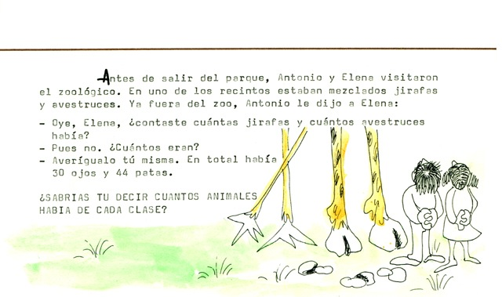
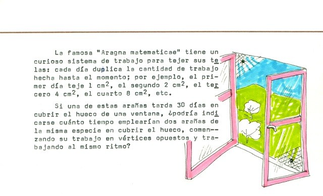
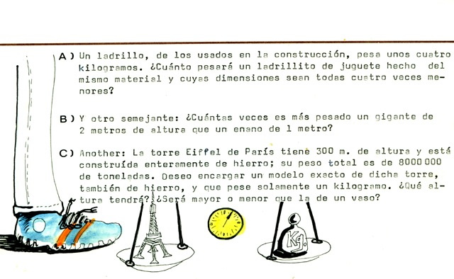
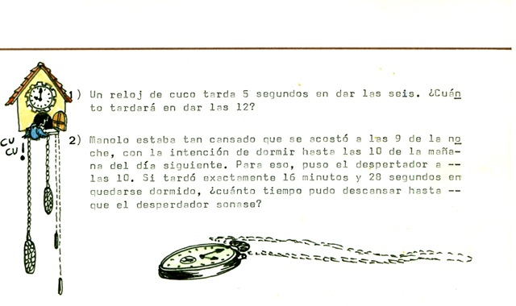
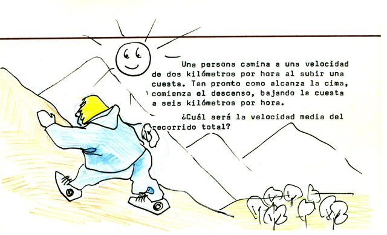
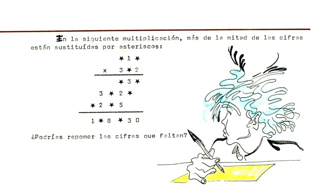
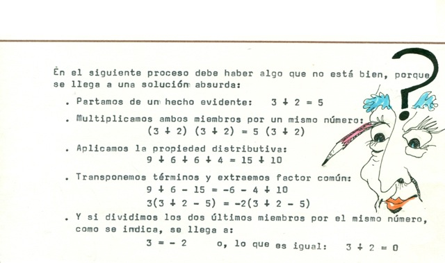
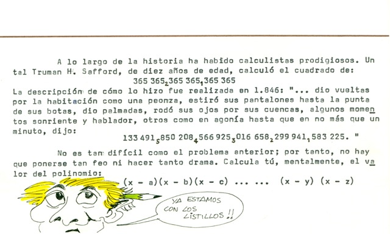
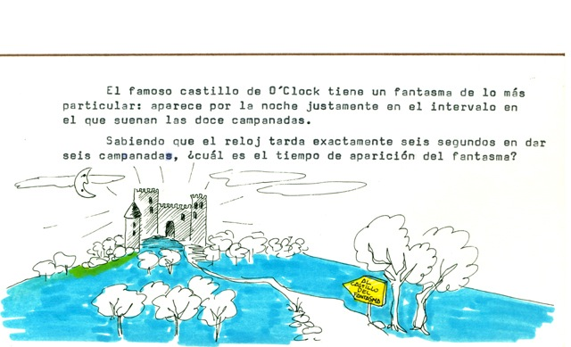
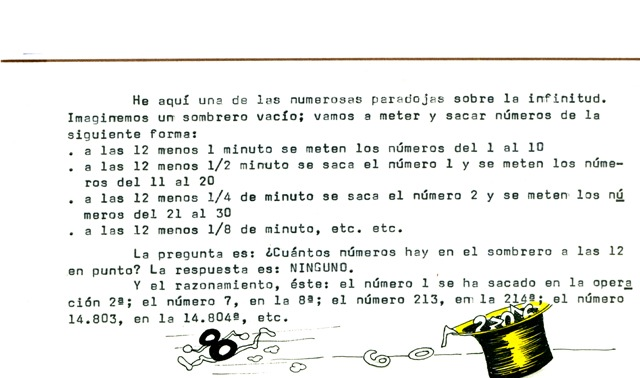
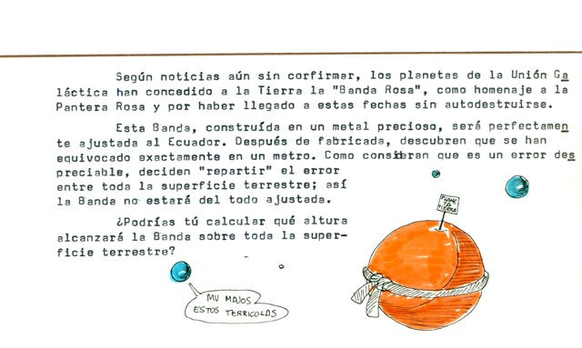